All 26 concepts
How to use this handbook
Why analogies
Retrieval is unusually hard to teach because nothing in it is visible. Chunks, vectors, ranks and scores are all abstractions with no physical form, so learners nod along and then cannot tell you why a reranker is not a retriever. An analogy gives the abstraction a body. Once you can picture a sous-chef walking to a shelf, you can reason about what happens when the shelf is badly organised.
How this handbook works
Every concept gets one analogy chosen specifically for it, rather than one metaphor stretched across all twenty-six. A stretched metaphor starts lying quickly. Each section then gives you the mapping table (analogy element to technical element), the flow, the LangChain code, and — the part most guides skip — an explicit note on where the analogy breaks down. An analogy you cannot see the edges of is a future misconception.
How to read it
Diagnose first. If you already have a broken RAG answer, start at the use-case chooser: match the symptom, jump to that concept, then open the visual. If you are learning cold: read the story, then the mapping, then the code. If you are teaching: the story and mapping are your slide, the code is your notebook cell, and the 'where it breaks' box is the question a sharp student will ask you. If you are revising: use the cheat sheet, then re-run the matching practical in retriever_advance_colab.ipynb.
The two anchor analogies
Start with these two pictures of the same idea — then open each concept's visual only when you want the full infographic.
Use-case chooser
Name the failure mode first. Then pick the technique — do not start from a favourite algorithm.
This table comes from the advanced Colab lab. Read left to right: symptom → technique → why. Each technique links to the analogy section below; after you understand the picture, run the matching practical in the notebook.
| Problem you are seeing | Best technique to try first | Why |
|---|---|---|
| Exact names, IDs, codes, dates are missed | BM25 / Sparse | Exact lexical matching |
| User uses different words than documents | Dense Retrieval | Semantic matching |
| Both exact terms + semantic intent matter | Hybrid Retrieval | BM25 + dense complement each other |
| BM25/dense result lists need merging | RRF | Rank-based fusion avoids score-scale problems |
| You know one retriever should matter more | Weighted Fusion | Explicitly control contribution |
| Retrieved chunks are repetitive | MMR | Relevance + diversity |
| Conversational query is incomplete | Query Rewriting | Makes query standalone |
| Different wording causes poor recall | Multi-Query | Searches multiple formulations |
| Very short/abstract query does not match document language | HyDE | Converts query into document-like representation |
| One question contains multiple independent questions | Query Decomposition | Retrieve each sub-question separately |
| Next search depends on information found in first search | Multi-Hop Retrieval | Sequential dependent retrieval |
| Small chunks retrieve well but lack context | Parent Document Retrieval | Search small → return larger parent |
| Exact sentence retrieves well but needs nearby context | Sentence Window | Search sentence → expand locally |
| Correct docs retrieved but wrong one ranks first | Reranking | More accurate second-stage ranking |
| Correct docs contain lots of irrelevant text | Contextual Compression | Remove irrelevant context |
| Tenant/role/year/version restrictions exist | Metadata Pre-filtering | Restrict search before retrieval |
| Data exists in SQL + vector DB + web + APIs | Query Routing | Select correct source |
| Answer exists in image/table/diagram | Multimodal retrieval | Text retrieval alone is insufficient |
The RAG Pipeline, End to End
Nobody hands the head chef the entire pantry.
The Restaurant Kitchen
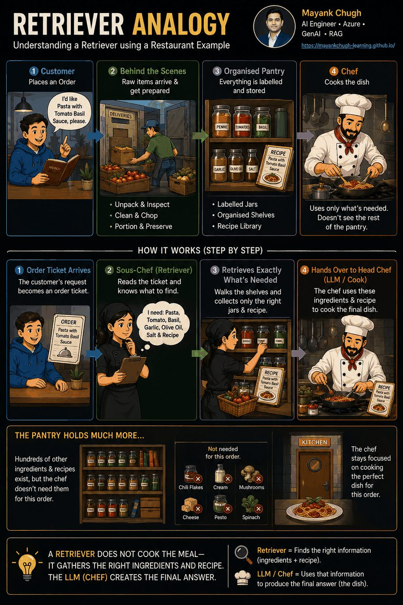
A customer orders pasta with tomato basil sauce. Behind the door, that order does not go straight to the stove. Raw deliveries arrive at the back and get unpacked and inspected. Vegetables are chopped into usable portions. Everything is put into labelled jars and arranged on organised shelves — because a pantry where nothing is labelled is the same as no pantry at all.
Only when the order ticket lands does the sous-chef walk the shelves and bring back exactly the jars and the one recipe card this dish needs. The head chef then cooks. The chef never sees the other four hundred jars, and does not need to.
The mapping
| In the kitchen | In the pipeline | Why it matches |
|---|---|---|
| Raw deliveries at the back door | Documents | Unstructured source material, exactly as it arrives |
| Unpacking and inspecting | Parsing / loading | Getting usable text out of PDFs, HTML, Word, scans |
| Chopping into portions | Chunking | Whole documents are too big to use as a unit |
| Labelled jars | Embeddings | Each chunk gets a numeric label describing its meaning |
| Organised shelves | Vector store | Storage arranged for fast lookup by that label |
| The sous-chef | Retriever | Fetches only what this specific order needs |
| The head chef | LLM | Turns retrieved ingredients into the finished dish |
| The plated dish | Final answer | What the customer actually receives |
The flow
The whole kitchen, in six lines
docs = loader.load() # deliveries
chunks = splitter.split_documents(docs) # prep work
store = Chroma.from_documents(chunks, embeddings) # labelled jars on shelves
retriever = store.as_retriever(search_kwargs={"k": 4}) # the sous-chef
context = retriever.invoke(user_question) # fetch for this order
answer = llm.invoke(prompt.format(context=context, question=user_question))What a Retriever Actually Is
The librarian finds the books. She does not write your essay.
The Librarian
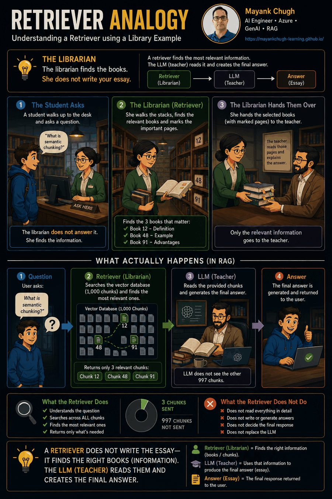
A student walks up to the desk and asks a question. The librarian does not answer it. She walks the stacks, finds the three books that actually address it, marks the relevant pages, and hands them over. The teacher reads those pages and explains the answer.
That division of labour is the whole idea. Suppose your vector database holds one thousand chunks from a set of PDFs and the question is 'What is semantic chunking?'. The retriever does not forward one thousand chunks. It returns chunk 12 (the definition), chunk 48 (an example) and chunk 91 (the advantages). Three chunks go to the LLM. Nine hundred and ninety-seven do not.
The mapping
| In the library | In RAG | Note |
|---|---|---|
| The student | User | Asks the question |
| The books on the shelves | Documents / chunks | The knowledge that exists |
| The librarian | Retriever | Finds relevant material; generates nothing |
| The teacher | LLM | Reads what was handed over and produces the answer |
| How many books she can carry | k | The cap on what gets passed forward |
| The catalogue system | Index / vector store | What makes finding possible at all |
The flow
The minimal retriever
retriever = vector_store.as_retriever(search_kwargs={"k": 4})
documents = retriever.invoke("What is semantic chunking?")
for document in documents:
print(document.page_content)
print(document.metadata)
print("-" * 50)score_threshold exists to break.search_type and search_kwargs
Same scene, same camera, different dials, completely different photo.
Camera in Manual Mode
Point a camera at a scene and the picture you get depends entirely on the settings. Switch the mode dial and you change which algorithm the camera runs. Inside each mode, a different set of controls becomes available — and some dials are simply greyed out because they mean nothing in that mode.
search_type is the mode dial. search_kwargs are the controls that mode exposes. This is why fetch_k and lambda_mult do nothing under plain similarity search: they are MMR dials, and MMR is not the mode you selected.
The mapping
| On the camera | In search_kwargs | What it changes |
|---|---|---|
| Mode dial | search_type | Which retrieval algorithm actually runs |
| Frames you keep | k | Final number of documents returned |
| Burst frames before you choose | fetch_k | Candidates considered before MMR selects (MMR only) |
| Depth-of-field trade-off | lambda_mult | Balance of relevance against diversity (MMR only) |
| Minimum acceptable exposure | score_threshold | Reject anything below this relevance |
| Lens filter on the front | filter | Blocks whole categories before the shot is taken |
The flow
MMR mode with its dials
retriever = vector_store.as_retriever(
search_type="mmr",
search_kwargs={
"k": 4, # final number of documents to return
"fetch_k": 20, # candidate documents considered by MMR
"lambda_mult": 0.5, # relevance vs diversity
},
)
documents = retriever.invoke("What is a vector database?")k produces a fluent, confident, wrong answer that looks exactly like a right one. Retrieval failures are silent in a way camera failures are not — which is why logging the retrieved chunks alongside the answer is not optional in production.Similarity Metrics
Same two people, three completely different questions about them.
Two Hikers with Compasses
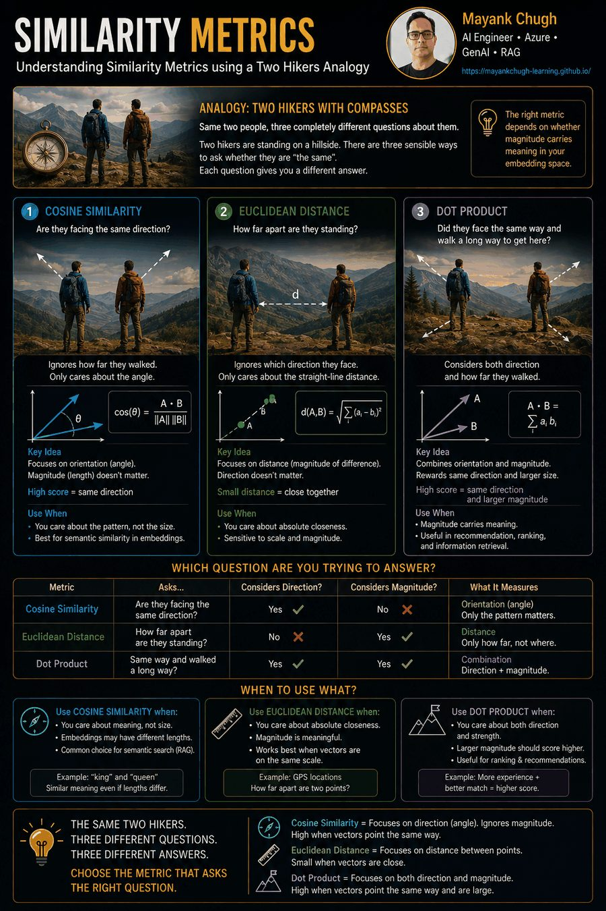
Two hikers are standing on a hillside. There are three sensible ways to ask whether they are 'the same'. Are they facing the same direction? How far apart are they standing? Or: are they facing the same way and did they both walk a long way to get there?
Those three questions are cosine similarity, Euclidean distance and dot product. They are not competing answers to one question — they are answers to three different questions, and which one is right depends on whether magnitude carries meaning in your embedding space.
The mapping
| The question | The metric | Best result |
|---|---|---|
| Are they facing the same way? | Cosine similarity | Highest score — the default for text embeddings |
| How far apart are they standing? | Euclidean distance (L2) | Lowest distance |
| Same direction, and how far did each walk? | Dot / inner product | Highest score — rewards magnitude too |
The flow
Chosen at index creation, not query time
store = Chroma.from_documents(
chunks,
embeddings,
collection_metadata={"hnsw:space": "cosine"}, # or "l2", "ip"
)
# Pinecone, Weaviate and Qdrant expose the same choice when the index is created.
# Changing it later means rebuilding the index.Metadata Filtering
Semantic similarity gets you into the building. Metadata decides which floors open.
Office Security Badge
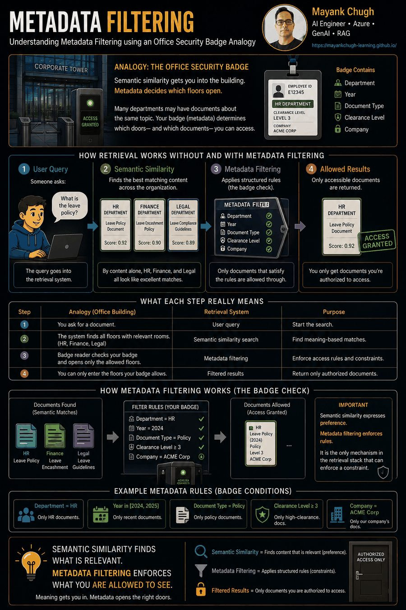
Someone asks for 'the leave policy'. By content alone, HR, Finance and Legal all hold documents that talk about leave, and all three are semantically excellent matches. The badge reader does not care what is written inside any of them. It cares about what is stamped on the outside: department, year, document type, clearance level, which company you work for.
That is metadata filtering. It is a structured constraint applied alongside meaning, and it is the only mechanism in the retrieval stack that can enforce a rule rather than express a preference.
The mapping
| The badge system | The retriever | Example |
|---|---|---|
| Attributes on the badge | Document metadata | {"department": "HR", "year": 2026} |
| Reader at each floor | Metadata filter | Applied during or after the search |
| Contractors: floors 1–3 only | Role-based access filter | {"access_role": "manager"} |
| Separate companies in one tower | Tenant filter | Hard isolation between customers |
| Badge expired in 2024 | Range / date filter | {"year": {"$gte": 2024, "$lte": 2026}} |
| Two conditions on one door | Boolean filter | {"$and": [...]} |
The flow
Filter passed into search_kwargs
retriever = vector_store.as_retriever(
search_type="similarity",
search_kwargs={
"k": 4,
"filter": {"department": "HR", "year": 2026},
},
)
documents = retriever.invoke("Show the HR leave policy for 2026.")
# Syntax varies: Chroma, Pinecone, Qdrant, Weaviate and Elasticsearch
# all express this differently.{"year": 2026} will silently exclude a 2025 policy that is still in force, and the user will never know a better document existed. The real work here is not the filter syntax; it is the quality and consistency of the metadata you wrote at ingestion time.Pre-filtering vs Post-filtering
Same rule, applied at a different moment — and the second version is expensive and leaky.
Visa at Check-in vs Immigration
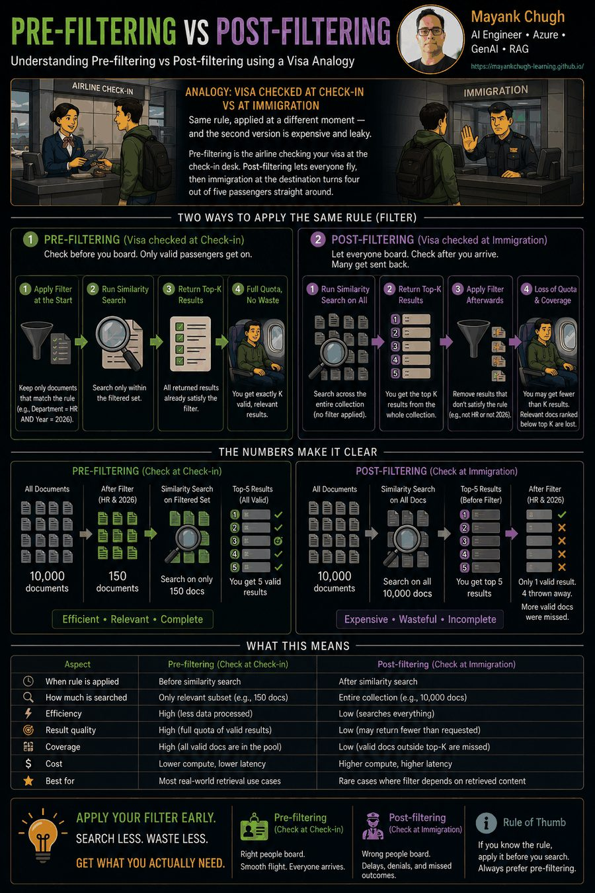
Pre-filtering is the airline checking your visa at the check-in desk. No visa, you never board, and the flight carries only people who are allowed to arrive. Post-filtering lets everyone fly, then immigration at the destination turns four out of five passengers straight around.
The numbers make the difference obvious. With ten thousand documents and a filter for HR and 2026, pre-filtering leaves one hundred and fifty documents and runs the similarity search only on those. Post-filtering runs the search across all ten thousand, returns the top five, and then discards four of them — leaving one result where you asked for five, while more valid HR documents that never made the top five sit unretrieved in the database.
The mapping
| At the airport | In retrieval | Consequence |
|---|---|---|
| Visa checked at check-in | Pre-filtering | Smaller, safer search space |
| Visa checked at arrival | Post-filtering | Wasted retrieval, weaker guarantees |
| Passengers who never boarded | Documents excluded before search | Never enter the candidate set at all |
| Turned around at the border | Results discarded after search | Already loaded, already ranked, then dropped |
| A near-empty arrivals hall | Too few final results | The classic post-filter failure |
The flow
Both, side by side
# Pre-filter: the vector DB applies the constraint during the search
retriever = vector_store.as_retriever(
search_type="similarity",
search_kwargs={"k": 4, "filter": {"department": "HR", "year": 2026}},
)
documents = retriever.invoke("Show the HR leave policy for 2026.")
# Post-filter: search first, discard afterwards
documents = vector_store.similarity_search("Show the HR leave policy for 2026.", k=5)
allowed = [
d for d in documents
if d.metadata.get("department") == "HR" and d.metadata.get("year") == 2026
]Sparse Retrieval
It matched the letters, not the meaning — and sometimes that is exactly what you want.
Index at the Back of the Book
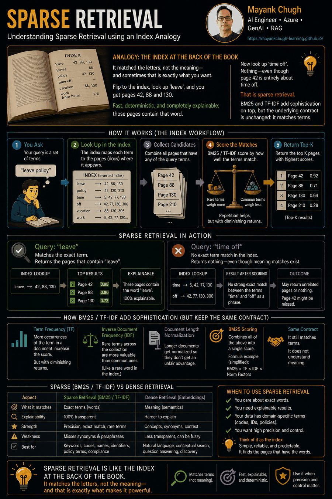
Flip to the index, look up 'leave', and you get pages 42, 88 and 130. Fast, deterministic, and completely explainable: those pages contain that word. Now look up 'time off'. Nothing — even though page 42 is entirely about time off.
That is sparse retrieval. BM25 and TF-IDF add sophistication on top (rare words count for more than common ones, repetition has diminishing returns) but the underlying contract is unchanged: it matches terms.
The mapping
| In the book | In sparse retrieval | Note |
|---|---|---|
| Index entries | Terms in the vocabulary | One entry per distinct token |
| Page numbers under an entry | Document IDs | The posting list |
| Words too common to index | Stop words | 'the' is in every document, so it discriminates nothing |
| Rare technical terms | High IDF weight | A rare match is far more informative |
| The ranking rules | BM25 / TF-IDF | How matches are scored and ordered |
The flow
BM25 in LangChain
from langchain_community.retrievers import BM25Retriever
bm25 = BM25Retriever.from_documents(chunks)
bm25.k = 5
documents = bm25.invoke("employee leave policy")AZ-400, surnames, version numbers, lambda_mult. Do not file sparse retrieval under 'the old way' — it catches precisely what dense retrieval blurs.Dense Retrieval
Not one word matched. He understood anyway.
The Colleague Who Knows What You Meant
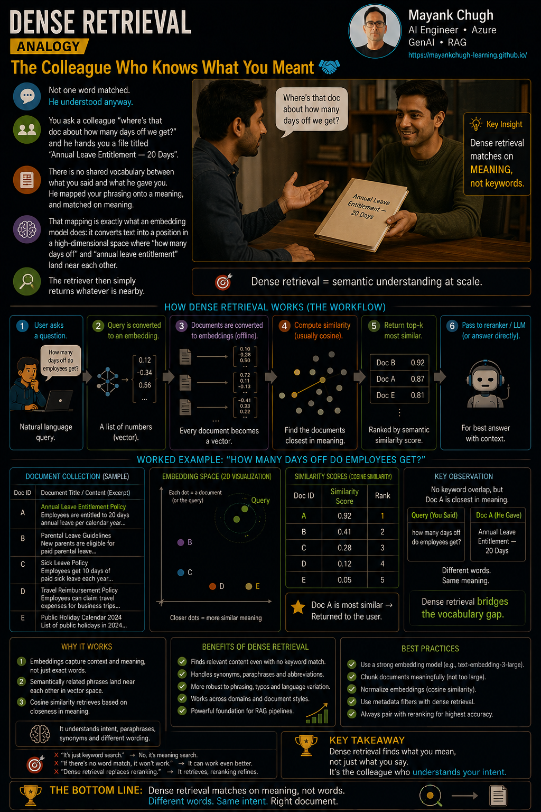
You ask a colleague 'where's that doc about how many days off we get?' and he hands you a file titled 'Annual Leave Entitlement — 20 Days'. There is no shared vocabulary between what you said and what he gave you. He mapped your phrasing onto a meaning, and matched on meaning.
That mapping is exactly what an embedding model does: it converts text into a position in a high-dimensional space where 'how many days off' and 'annual leave entitlement' land near each other. The retriever then simply returns whatever is nearby.
The mapping
| The colleague | Dense retrieval | Note |
|---|---|---|
| Understanding what you meant | Embedding the query | Text becomes a vector representing meaning |
| His mental map of the shared drive | Vector store of document embeddings | Built once, at ingestion |
| 'That sounds like this file' | Nearest-neighbour search | Closest vectors, not matching words |
| How many files he brings | k | Same cap as always |
The flow
Dense retrieval
dense = vector_store.as_retriever(search_kwargs={"k": 5})
documents = dense.invoke("How many days off can employees take?")
# can return: "Employees are entitled to 20 days of annual leave."INV-2026-0041 and it will cheerfully return invoice INV-2026-0141, because those two strings are neighbours in meaning-space.Hybrid Retrieval
One is exact but narrow. One is fuzzy but broad. Good detectives use both.
Fingerprints and an Eyewitness
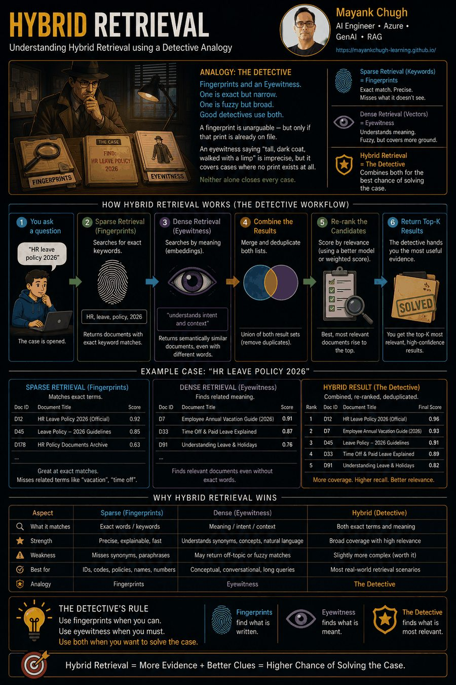
A fingerprint is unarguable — but only if that print is already on file. An eyewitness saying 'tall, dark coat, walked with a limp' is imprecise, but it covers cases where no print exists at all. Neither alone closes every case.
Hybrid retrieval runs a keyword search and a vector search over the same query and combines the results. Ask for 'HR leave policy 2026' and sparse retrieval nails the literal tokens HR, leave policy and 2026, while dense retrieval surfaces 'employee annual vacation guidelines', which shares almost no words with the query and is exactly what you wanted.
The mapping
| The investigation | Hybrid retrieval | Strength |
|---|---|---|
| Fingerprint match | Sparse / BM25 | Exact identifiers, codes, rare terms |
| Eyewitness description | Dense / vector | Meaning, paraphrase, synonyms |
| Weighing the two kinds of evidence | Fusion (Concepts 18–19) | How the two lists become one |
| Senior detective ranking suspects | Reranker (Concept 21) | A second, more careful pass |
The flow
EnsembleRetriever
from langchain_community.retrievers import BM25Retriever
from langchain_classic.retrievers import EnsembleRetriever
bm25 = BM25Retriever.from_documents(chunks)
bm25.k = 5
dense = vector_store.as_retriever(search_kwargs={"k": 5})
hybrid = EnsembleRetriever(retrievers=[bm25, dense], weights=[0.5, 0.5])
documents = hybrid.invoke("HR leave policy 2026")Query Rewriting
'What did he say about it?' is unsearchable until someone catches you up.
Joining a Group Chat Halfway
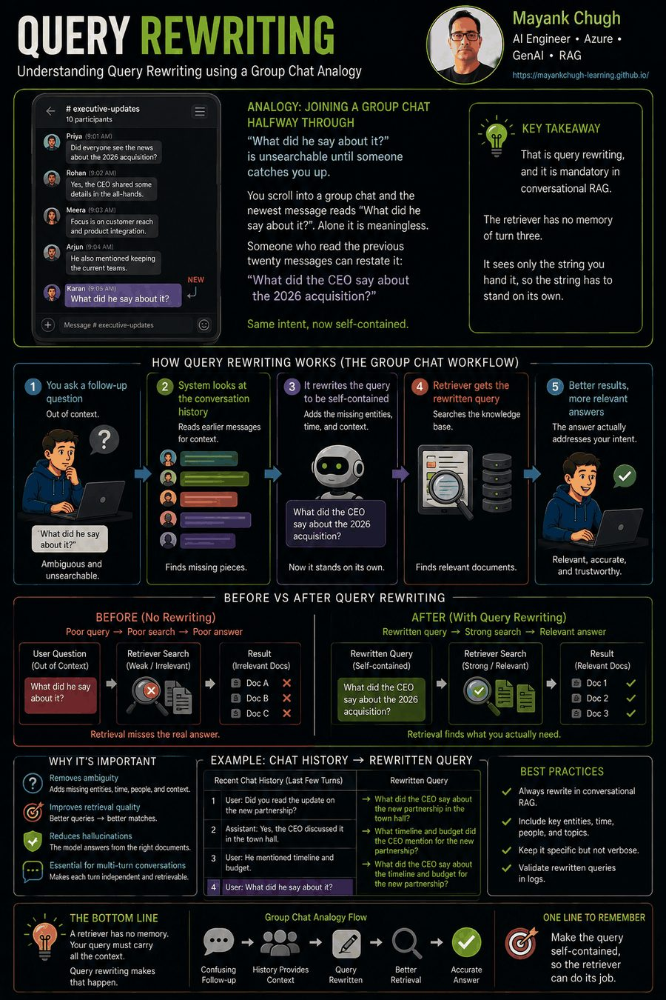
You scroll into a group chat and the newest message reads 'What did he say about it?'. Alone it is meaningless. Someone who read the previous twenty messages can restate it: 'What did the CEO say about the 2026 acquisition?'. Same intent, now self-contained.
That is query rewriting, and it is mandatory in conversational RAG. The retriever has no memory of turn three. It sees only the string you hand it, so the string has to stand on its own.
The mapping
| In the chat | In the pipeline | Note |
|---|---|---|
| The previous twenty messages | Conversation history | State the retriever cannot see |
| The friend who catches you up | Rewriting LLM | Resolves pronouns and implied subjects |
| The restated message | Standalone query | What actually gets embedded |
| 'he', 'it', 'that one' | Unresolved references | The specific thing being fixed |
The flow
Rewrite before retrieve
rewrite_prompt = ChatPromptTemplate.from_messages([
("system", "Rewrite the user's question as a standalone search query, "
"resolving all pronouns using the chat history. Return only the query."),
MessagesPlaceholder("history"),
("human", "{question}"),
])
standalone = (rewrite_prompt | llm | StrOutputParser()).invoke(
{"history": history, "question": question}
)
documents = retriever.invoke(standalone)Query Expansion
Same plant, different shop, no match.
Coriander or Cilantro
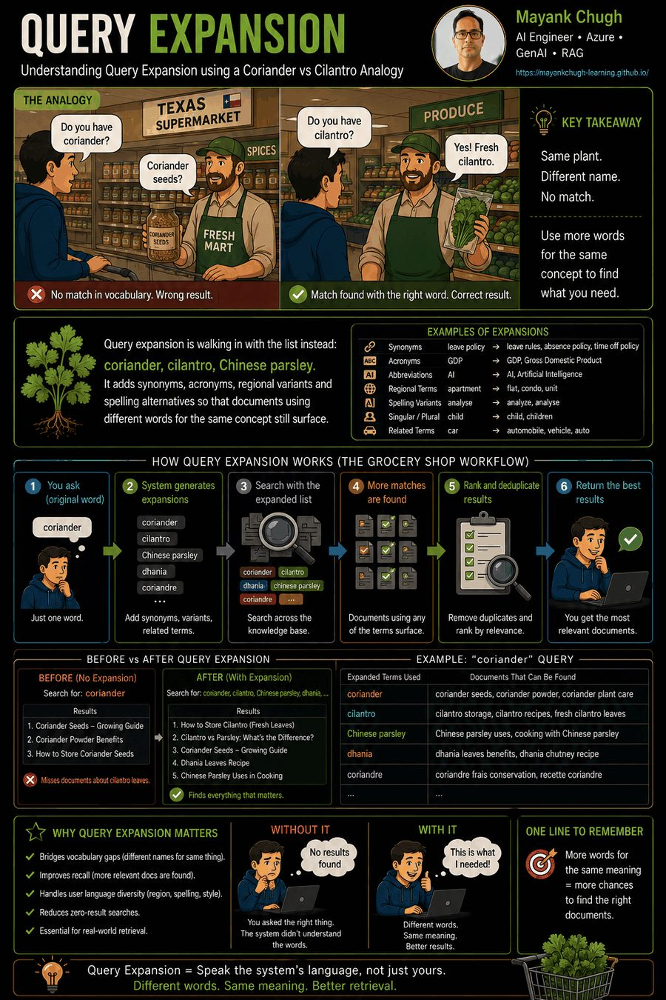
You walk into a supermarket in Texas and ask for coriander. They hand you a jar of seeds. You wanted the fresh green leaves — which that shop calls cilantro. Nothing was wrong with your request except the vocabulary.
Query expansion is walking in with the list instead: coriander, cilantro, Chinese parsley. It adds synonyms, acronyms, regional variants and spelling alternatives so that documents using different words for the same concept still surface.
The mapping
| At the supermarket | In retrieval | Example |
|---|---|---|
| The word you happened to use | Original query | 'employee leave policy' |
| Every name for the same thing | Expanded terms | 'vacation policy', 'annual leave guidelines', 'PTO' |
| Asking three aisles instead of one | Broader retrieval | Higher recall |
| Also being handed the seeds | Precision loss | The unavoidable trade-off |
The flow
Expansion, then retrieval
expanded = (
"employee leave policy OR vacation policy "
"OR annual leave guidelines OR PTO OR time off entitlement"
)
documents = bm25.invoke(expanded)
# Domain glossaries beat LLM-generated synonyms for regulated corpora:
# {"PTO": ["paid time off", "annual leave"], "AL": ["annual leave"]}Query Decomposition
No single document answers a comparison question. Four documents do.
Work Breakdown Structure
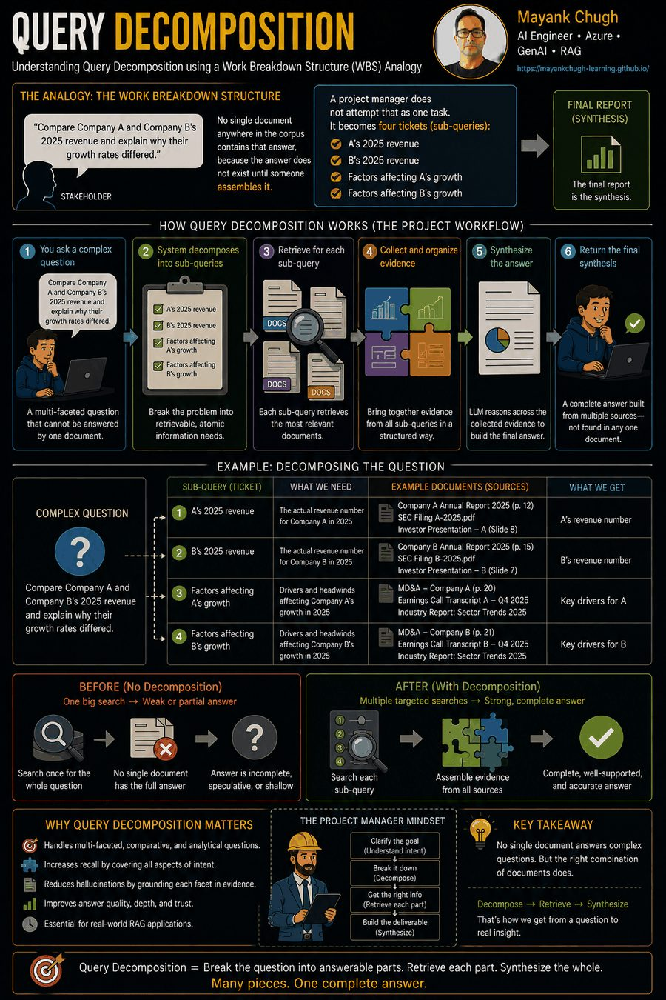
A stakeholder says: 'compare Company A and Company B's 2025 revenue and explain why their growth rates differed'. No chunk anywhere in the corpus contains that answer, because the answer does not exist until someone assembles it.
A project manager does not attempt that as one task. It becomes four tickets: A's 2025 revenue, B's 2025 revenue, factors affecting A's growth, factors affecting B's growth. Each is retrievable. The final report is the synthesis.
The mapping
| In the project | In retrieval | Note |
|---|---|---|
| The epic | Complex multi-part query | Not answerable as stated |
| Individual tickets | Sub-queries | Each one is a normal retrieval |
| Assigning each ticket | One retrieval call per sub-query | Run in parallel |
| The status report | Synthesis by the LLM | Where the comparison actually happens |
The flow
Decompose, retrieve, synthesise
subqueries = decompose_chain.invoke(question) # -> list[str]
evidence = {sq: retriever.invoke(sq) for sq in subqueries}
answer = llm.invoke(
synthesis_prompt.format(question=question, evidence=evidence)
)HyDE — Hypothetical Document Embeddings
Draw a face that may not exist, then search the database for photos that look like it.
Police Sketch Artist
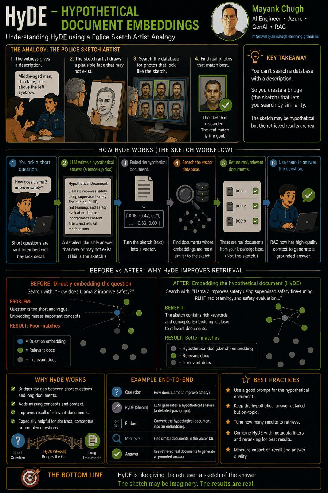
A witness gives a description: middle-aged, thin face, scar above the left eyebrow. You cannot search a mugshot database with a sentence. So a sketch artist draws a plausible face from the description — a face that quite possibly belongs to no one — and you search for photographs that resemble the sketch.
That is HyDE exactly. A short question and a long document are structurally dissimilar, which hurts embedding similarity. So the LLM first writes a hypothetical answer — 'Llama 2 improves safety using supervised safety fine-tuning, RLHF, red teaming and safety evaluation' — and that gets embedded and used for the search. The sketch is discarded. The retrieved document is real.
The mapping
| The investigation | HyDE | Note |
|---|---|---|
| The witness description | The short user query | Too sparse to match well |
| The sketch | The hypothetical document | Fabricated on purpose, never returned |
| 'Looks like the sketch' | Embedding similarity | The actual search operation |
| The mugshot database | The vector store | Only real records live here |
| The matched photograph | The retrieved chunk | Real evidence, found via a fiction |
The flow
Both the class and the explicit chain
from langchain_classic.chains.hyde.base import HypotheticalDocumentEmbedder
hyde_embeddings = HypotheticalDocumentEmbedder.from_llm(
llm=llm,
base_embeddings=embeddings,
prompt_key="web_search",
)
# The explicit version — clearer to teach, easier to debug:
hypothetical = (hyde_prompt | llm | StrOutputParser()).invoke({"question": question})
vector = embeddings.embed_query(hypothetical)
documents = vector_store.similarity_search_by_vector(vector, k=4)Multi-Query Retriever
Three phrasings, three memories, one pooled answer.
Asking Three Colleagues
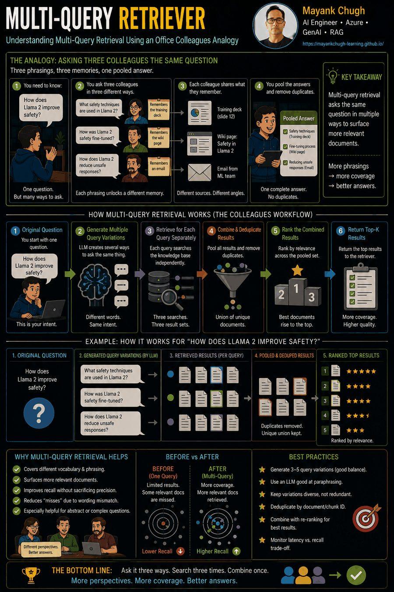
You ask three people the same thing in three different ways. One remembers the training deck, one remembers the wiki page, one remembers an email. Each phrasing unlocked a different memory. You pool what comes back and drop the duplicates.
Multi-query retrieval does the same mechanically: the LLM generates several variations of the question, each is retrieved for separately, and the unique union is returned. 'How does Llama 2 improve safety?' becomes 'What safety techniques are used in Llama 2?', 'How was Llama 2 safety fine-tuned?' and 'How does Llama 2 reduce unsafe responses?'.
The mapping
| Asking around | Multi-query | Note |
|---|---|---|
| Rephrasing for each person | Generated query variations | Usually three to five |
| Each person's memory | One retrieval run per variation | Independent searches |
| Pooling the answers | Union of results | Duplicates removed |
| Keeping your original question too | include_original=True | Cheap insurance |
The flow
MultiQueryRetriever
from langchain_classic.retrievers.multi_query import MultiQueryRetriever
multi_query = MultiQueryRetriever.from_llm(
retriever=vector_store.as_retriever(),
llm=llm,
include_original=True,
)
documents = multi_query.invoke("How does Llama 2 improve safety?")Parent Document Retriever
Search small, return big.
Index to the Line, Read the Chapter
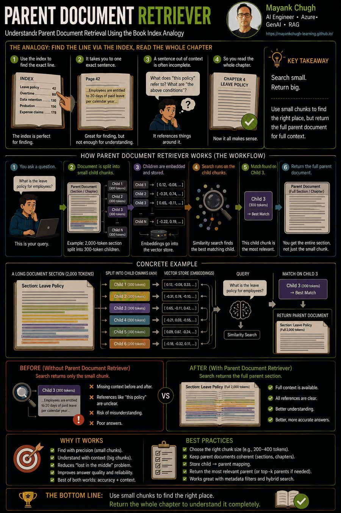
The index takes you to one exact sentence, which is perfect for finding. But a sentence lifted out of a chapter is often useless for understanding — it references 'this policy' and 'the above conditions' and assumes everything around it.
So you use the sentence to locate the chapter, and hand over the chapter. Concretely: a two-thousand-token section is split into three-hundred-token children. The children are embedded and searched. When child 3 matches, the retriever returns the full parent section instead.
The mapping
| In the book | In the retriever | Note |
|---|---|---|
| The indexed sentence | Child chunk | Small, precise, what gets embedded |
| The chapter around it | Parent document | Large, contextual, what gets returned |
| The index itself | Child embeddings in the vector store | Search happens here |
| The shelf holding full books | Docstore | Parents live here, not in the vector index |
The flow
ParentDocumentRetriever
from langchain_classic.retrievers import ParentDocumentRetriever
from langchain.storage import InMemoryStore
from langchain_text_splitters import RecursiveCharacterTextSplitter
retriever = ParentDocumentRetriever(
vectorstore=vector_store,
docstore=InMemoryStore(),
child_splitter=RecursiveCharacterTextSplitter(chunk_size=300),
parent_splitter=RecursiveCharacterTextSplitter(chunk_size=2000),
)
retriever.add_documents(documents)
results = retriever.invoke("How was RLHF performed?")Sentence Window Retriever
Match one line, return the five around it.
Notification vs Opening the Thread
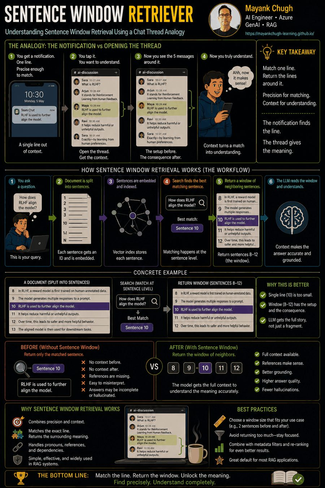
A notification shows a single line: 'RLHF is used to further align the model'. Precise enough to match your search, useless on its own. You tap it, and the app shows the five messages around it — the setup before and the consequence after.
Sentence window retrieval indexes individual sentences for matching precision, then replaces the matched sentence with a window of its neighbours before handing anything to the LLM. Match sentence 10, return sentences 8 through 12.
The mapping
| On your phone | In the retriever | Note |
|---|---|---|
| The one-line notification | The indexed sentence | What is embedded and searched |
| Tapping to open the thread | Metadata lookup | The window replaces the content |
| The five messages shown | The returned window | Fixed number of neighbours |
| Scroll depth | Window size | Your tunable parameter |
The flow
LangChain has no built-in class — you compose it
# At ingestion
metadata = {
"sentence_id": 10,
"window": " ".join(sentences[8:13]), # sentences 8..12
}
# At query time
documents = vector_store.similarity_search(query, k=4)
for document in documents:
document.page_content = document.metadata["window"]
# LlamaIndex ships this directly (SentenceWindowNodeParser +
# MetadataReplacementPostProcessor); in LangChain it is custom code.Multi-Hop Retrieval
You cannot find clue two by staring harder at clue one.
Treasure Hunt Clue Chain
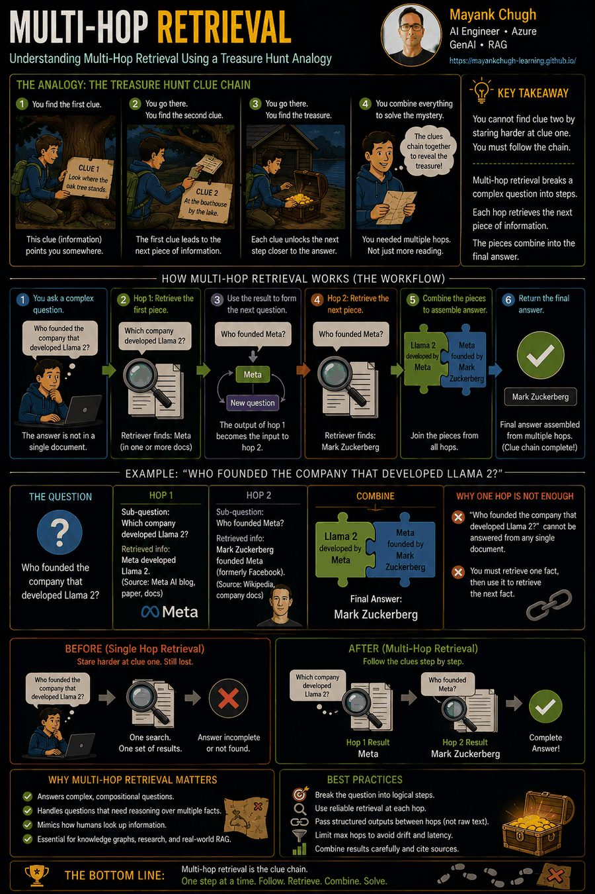
The first clue sends you to the oak tree. Taped under the branch is the second clue, which sends you to the boathouse. No amount of re-reading clue one would have revealed the boathouse — you had to physically go and collect the next piece.
'Who founded the company that developed Llama 2?' is that structure. Hop one asks which company developed Llama 2 and returns Meta. Only now can hop two be formed: who founded Meta. Both answers combine into the final response.
The mapping
| On the hunt | In retrieval | Note |
|---|---|---|
| Clue one | First retrieval | Answers only part of the question |
| What clue one reveals | Intermediate evidence | The bridge entity |
| Clue two, written from clue one | Generated follow-up query | Cannot be written in advance |
| The final chest | Combined answer | Synthesised from all hops |
| Giving up after ten trees | Hop limit | The safety rail |
The flow
No built-in class — LangGraph and state
documents_1 = retriever.invoke(question)
next_query = llm.invoke(
followup_prompt.format(question=question, evidence=documents_1)
)
documents_2 = retriever.invoke(next_query)
answer = llm.invoke(
synthesis_prompt.format(evidence=documents_1 + documents_2)
)
# In production: LangGraph, with explicit state, a hop counter and a stop condition.Weighted Fusion
Theory is 40%, practical is 60% — but only if both were marked on the same scale.
Weighted Exam Marks
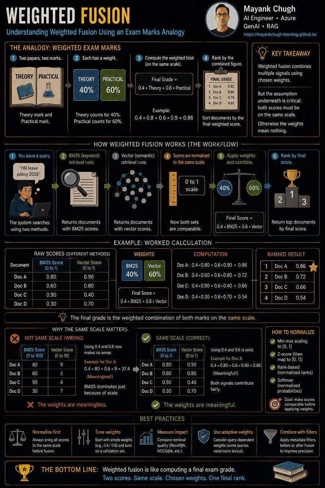
Two papers, two marks, one final grade. Theory counts for forty per cent and practical for sixty. A BM25 score of 0.8 and a vector score of 0.9 with those weights gives 0.4 × 0.8 + 0.6 × 0.9 = 0.86, and documents are sorted by that combined figure.
The arithmetic is trivial. The assumption underneath it is not: both papers must be marked out of the same total. One marked out of 100 and one out of 10 makes the weighting meaningless, no matter how carefully you chose the percentages.
The mapping
| In the exam | In fusion | Note |
|---|---|---|
| Theory paper mark | BM25 score | Unbounded, corpus-dependent |
| Practical paper mark | Vector score | Cosine sits in [-1, 1] |
| The 40/60 split | Weights | Your explicit judgement of which retriever to trust |
| Marking both out of 100 | Score normalisation | Mandatory, and usually skipped |
| The final grade | Combined score | What the ranking is sorted on |
The flow
Usually custom code
def normalise(scores):
lo, hi = min(scores), max(scores)
return [(s - lo) / (hi - lo + 1e-9) for s in scores]
final = 0.4 * normalise(bm25_scores)[i] + 0.6 * normalise(vector_scores)[i]
# Note: LangChain's EnsembleRetriever(weights=[...]) is *weighted RRF*,
# not raw-score weighted addition. If you need true score fusion, write it
# yourself or use your vector DB's native hybrid implementation.Reciprocal Rank Fusion
Nobody adds up lap times across circuits. They award points for position.
Championship Points Table
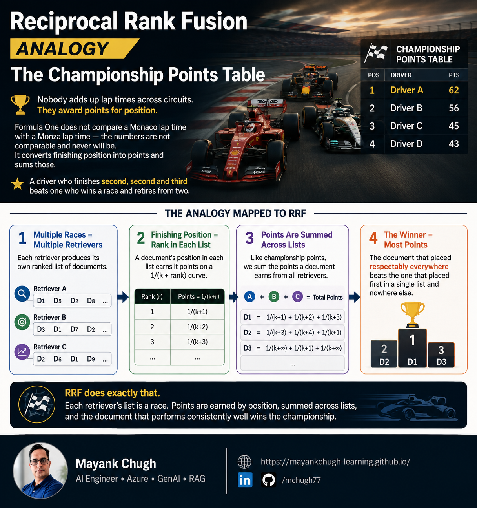
RRF worked example
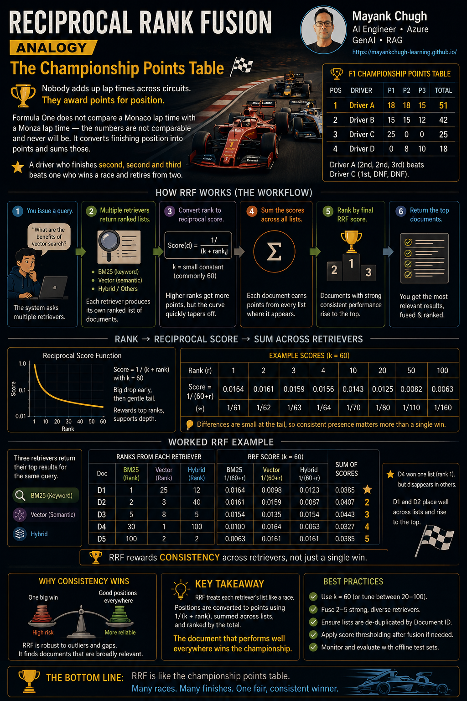
Formula One does not compare a Monaco lap time with a Monza lap time — the numbers are not comparable and never will be. It converts finishing position into points and sums those. A driver who finishes second, second and third beats one who wins a race and retires from two.
RRF does exactly that. Each retriever's list is a race. A document's position in each list earns it points on a 1/(k + rank) curve, points are summed across lists, and the document that placed respectably everywhere beats the one that placed first in a single list and nowhere else.
The mapping
| In the championship | In RRF | Note |
|---|---|---|
| Each race | Each retriever's ranked list | BM25 list, vector list, and so on |
| Finishing position | Rank | Position is all that is used |
| The points curve | 1 / (k + rank) | Steep at the top, flat further down |
| Championship standings | Fused ranking | Sum of points across lists |
| Consistent podium finishes | Appearing high in several lists | What RRF rewards |
The flow
EnsembleRetriever uses weighted RRF internally
from langchain_classic.retrievers import EnsembleRetriever
ensemble = EnsembleRetriever(
retrievers=[bm25, dense],
weights=[0.5, 0.5], # weighted reciprocal rank fusion
)
documents = ensemble.invoke("Llama 2 grouped query attention")
# Because it uses ranks, the two retrievers' score scales never need to match.Maximal Marginal Relevance
The rice is excellent. That is not a reason to take rice four times.
The Buffet Plate
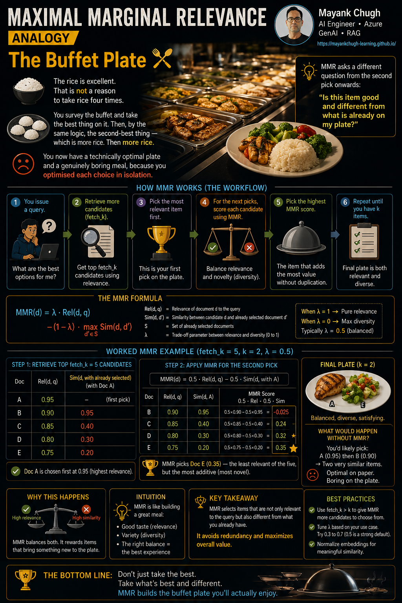
You survey the buffet and take the best thing on it. Then, by the same logic, the second-best thing — which is more rice. Then more rice. You now have a technically optimal plate and a genuinely boring meal, because you optimised each choice in isolation.
MMR asks a different question from the second pick onwards: is this item good and different from what is already on my plate? Work through the numbers from the notes with fetch_k = 5 and k = 2 and λ = 0.5. Doc A is chosen first at 0.95. Then Doc B scores −0.025 (highly relevant at 0.90, but 0.95 similar to Doc A — nearly a duplicate), Doc C 0.24, Doc D 0.32 and Doc E 0.35. MMR picks Doc E, which is the least relevant of the five and the most additive.
The mapping
| At the buffet | In MMR | Symbol |
|---|---|---|
| The best dish on the counter | Highest query similarity | Sim(Dᵢ, Q) |
| What is already on your plate | The selected set | S |
| 'Do I already have this?' | Similarity to what is selected | Sim(Dᵢ, D⫺) |
| How adventurous you feel | Relevance vs diversity balance | λ — lambda_mult |
| Plate capacity | Final results returned | k |
| The stretch of counter you survey | Candidate pool | fetch_k |
The flow
MMR mode
retriever = vector_store.as_retriever(
search_type="mmr",
search_kwargs={
"k": 4,
"fetch_k": 20, # survey 20, plate 4
"lambda_mult": 0.5, # 1.0 = pure relevance, 0.0 = pure diversity
},
)Reranking
Nobody interviews a thousand people. Nobody hires off a keyword score either.
ATS then Interview Panel
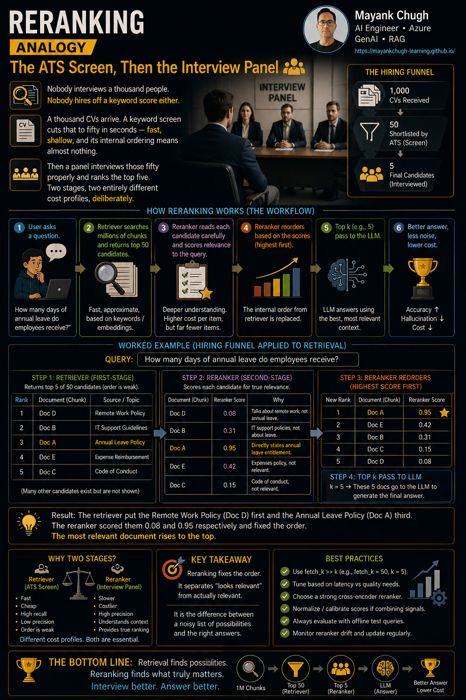
A thousand CVs arrive. A keyword screen cuts that to fifty in seconds — fast, shallow, and its internal ordering means almost nothing. Then a panel interviews those fifty properly and ranks the top five. Two stages, two entirely different cost profiles, deliberately.
Retrieval is that hiring funnel. A million stored chunks, a first-stage retriever that surfaces fifty candidates, a reranker that scores each one carefully against the query, and five that reach the LLM. Ask 'how many days of annual leave do employees receive?' and the first stage might return the remote work policy first and the annual leave policy third. The reranker scores them 0.08 and 0.95 respectively and fixes the order.
The mapping
| In hiring | In retrieval | Note |
|---|---|---|
| A thousand applicants | The full corpus | Far too many to assess properly |
| Keyword ATS screen | First-stage retrieval | BM25, vector or hybrid — fast and broad |
| Fifty shortlisted | Candidate set | fetch_k / rank_window_size |
| The interview panel | Cross-encoder reranker | Slow, accurate, applied to the shortlist only |
| The minimum hiring bar | Score threshold | Below it, nobody gets an offer |
| Five offers made | top_n sent to the LLM | The final context |
The flow
CrossEncoderReranker
from langchain_classic.retrievers import ContextualCompressionRetriever
from langchain_classic.retrievers.document_compressors import CrossEncoderReranker
from langchain_community.cross_encoders import HuggingFaceCrossEncoder
model = HuggingFaceCrossEncoder(model_name="cross-encoder/ms-marco-MiniLM-L6-v2")
reranker = CrossEncoderReranker(model=model, top_n=5)
retriever = ContextualCompressionRetriever(
base_compressor=reranker,
base_retriever=dense_retriever, # returns ~50 candidates
)Bi-encoder vs Cross-encoder
You can pre-write a profile. You cannot pre-run a date.
Dating Profiles vs a Date
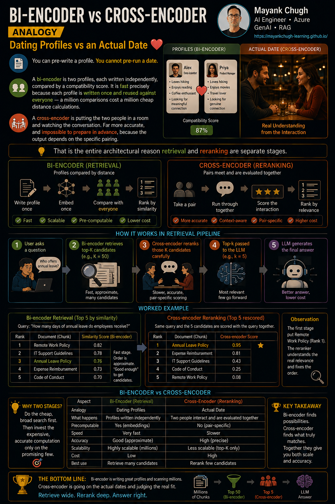
A bi-encoder is two profiles, each written independently, compared by a compatibility score. It is fast precisely because each profile is written once and reused against everyone — a million comparisons cost a million cheap distance calculations.
A cross-encoder is putting the two people in a room and watching the conversation. Far more accurate, and impossible to prepare in advance, because the output depends on the specific pairing. That is the entire architectural reason retrieval and reranking are separate stages.
The mapping
| In dating | In retrieval | Consequence |
|---|---|---|
| Profile written once, in advance | Document embedding | Precomputed and stored at ingestion |
| Compatibility score from two profiles | Cosine similarity | Cheap, scales to millions |
| An actual date | Cross-encoder forward pass on [query + document] | One model run per pair |
| Cannot pre-run every possible date | Cross-encoders cannot be precomputed | Why they cannot search a corpus |
| Screen by profile, date the shortlist | Retrieve broadly, rerank narrowly | The whole two-stage design |
The flow
The cost difference, made explicit
# Bi-encoder: one embedding call, then vector maths across millions
query_vector = embeddings.embed_query(question) # document vectors already stored
# Cross-encoder: one model forward pass per candidate document
scores = model.score([(question, d.page_content) for d in candidates])
ranked = [d for _, d in sorted(zip(scores, candidates), reverse=True)]Pointwise, Pairwise and Listwise Reranking
Three ways to judge five dishes, three very different bills.
Judging a Cooking Competition
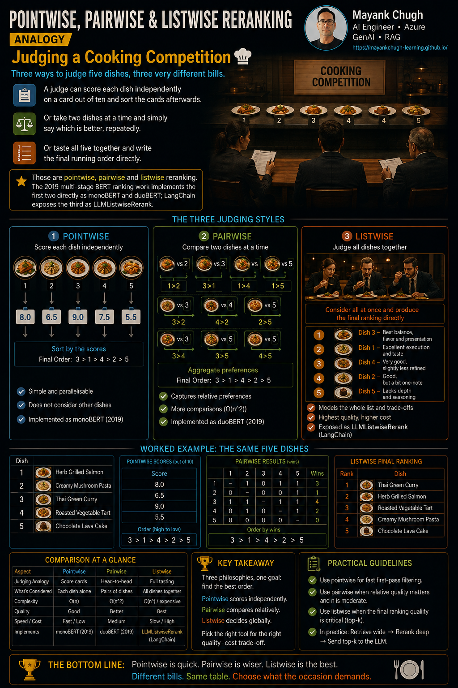
A judge can score each dish independently on a card out of ten and sort the cards afterwards. Or take two dishes at a time and simply say which is better, repeatedly. Or taste all five together and write the final running order directly.
Those are pointwise, pairwise and listwise reranking. The 2019 multi-stage BERT ranking work implements the first two directly as monoBERT and duoBERT; LangChain exposes the third as LLMListwiseRerank.
The mapping
| The judging method | The reranking family | Cost |
|---|---|---|
| Score each dish on its own card | Pointwise (monoBERT) | N model calls — linear |
| 'Which of these two is better?' | Pairwise (duoBERT) | Grows roughly quadratically |
| Taste all five, write the order | Listwise (LLMListwiseRerank) | One call, but order-sensitive |
The flow
Listwise reranking with an LLM
from langchain_classic.retrievers.document_compressors import LLMListwiseRerank
listwise = LLMListwiseRerank.from_llm(llm=llm, top_n=5)
retriever = ContextualCompressionRetriever(
base_compressor=listwise,
base_retriever=base_retriever,
)Contextual Compression
They do not send you the newspaper reordered. They send you the three paragraphs.
Newspaper Clipping Service
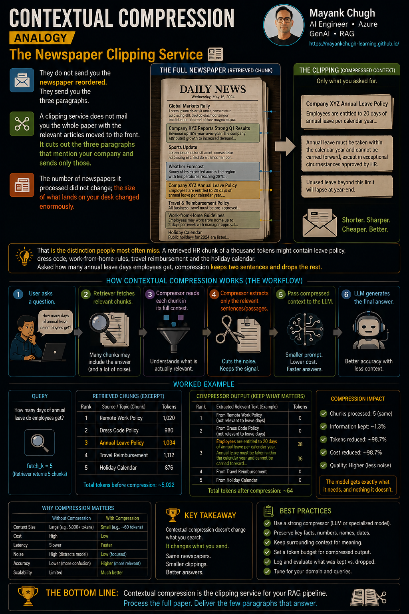
A clipping service does not mail you the whole paper with the relevant articles moved to the front. It cuts out the three paragraphs that mention your company and sends only those. The number of newspapers it processed did not change; the size of what lands on your desk changed enormously.
That is the distinction people most often miss. A retrieved HR chunk of a thousand tokens might contain leave policy, dress code, work-from-home rules, travel reimbursement and the holiday calendar. Asked how many annual leave days employees get, compression keeps two sentences and drops the rest.
The mapping
| Stage | What it changes | What it leaves alone |
|---|---|---|
| Retriever | Which documents you have | Their order and their content |
| Reranker | The order of those documents | Their content — 1,000 words stay 1,000 words |
| Contextual compression | The content inside them | Often the document count stays the same |
The flow
ContextualCompressionRetriever
from langchain_classic.retrievers import ContextualCompressionRetriever
from langchain_classic.retrievers.document_compressors import (
LLMChainExtractor,
EmbeddingsFilter,
)
compressor = LLMChainExtractor.from_llm(llm) # the intern
# compressor = EmbeddingsFilter(embeddings=embeddings,
# similarity_threshold=0.75) # the metal detector
retriever = ContextualCompressionRetriever(
base_compressor=compressor,
base_retriever=dense_retriever,
)
documents = retriever.invoke(question)k? Because if one thousand-token document contains twenty useful tokens, retrieving fewer documents does not help — you still send a thousand tokens. But compression is lossy by design, and a clipping service can cut away the sentence that gave the quote its meaning. An aggressive extractor will happily remove the effective date, the 'except for contractors' clause, or the caveat, and hand the LLM a cleaner context that is now wrong.Multimodal Retrieval
A hum and a studio master share nothing — until both become the same kind of fingerprint.
Humming a Tune to Shazam
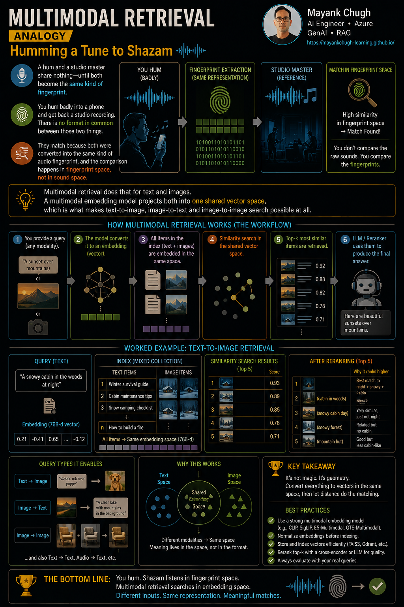
You hum badly into a phone and get back a studio recording. There is no format in common between those two things. They match because both were converted into the same kind of audio fingerprint, and the comparison happens in fingerprint space, not in sound space.
Multimodal retrieval does that for text and images. A multimodal embedding model projects both into one shared vector space, which is what makes text-to-image, image-to-text and image-to-image search possible at all.
The mapping
| With Shazam | In multimodal retrieval | Note |
|---|---|---|
| Your hum | Query in one modality | Text, typically |
| The studio recording | Stored item in another modality | Images, typically |
| The audio fingerprint | Shared embedding space | Where the comparison actually happens |
| The returned track | Cross-modal nearest neighbour | Retrieved by proximity, not format |
The flow
A CLIP-style shared space
# Both modalities embed into the same dimensionality
text_vector = multimodal_embeddings.embed_query("a red sports car at night")
results = image_store.similarity_search_by_vector(text_vector, k=5)
# The image vectors were created by the image encoder of the *same* model.
# Mixing encoders from different models produces meaningless distances.Query Understanding and Routing
The concierge does not answer. He works out which desk you need.
The Hotel Concierge
You approach with 'I need this sorted by Friday'. The concierge does not attempt it. He works out what kind of request it is, checks you are actually a guest, and points you at housekeeping, the booking desk or the airport shuttle. Retrieval is one desk among several.
That is the front of a production pipeline: understand the intent, extract any metadata implied by the phrasing, apply security and governance, then route. A question about last quarter's revenue belongs in SQL. A question about today's news belongs in web search. Sending either to your vector store guarantees a fluent, ungrounded answer.
The mapping
| At the hotel | In the pipeline | Note |
|---|---|---|
| Working out what you actually need | Query understanding / intent classification | Before any search runs |
| Checking your room key and status | Security and governance | Who is allowed to ask this |
| Noticing 'by Friday' | Metadata extraction | Turns phrasing into filters |
| Choosing the right desk | Query routing | Vector DB, SQL, graph, web, API |
| Sending you back to the lobby | Fallback route | The 'no suitable source' path |
The flow
Routing
route = router_chain.invoke(question) # -> "vector" | "sql" | "web" | "graph"
ROUTES = {
"vector": vector_retriever,
"sql": sql_chain,
"web": web_search_tool,
"graph": graph_retriever,
}
documents = ROUTES.get(route, vector_retriever).invoke(question)The analogy cheat sheet
Use the analogy as the retrieval cue. If you can recall the picture, the mechanism follows; if you cannot, that is the section to re-read.
| # | Concept | Analogy | Memory hook |
|---|---|---|---|
| 01 | RAG pipeline | Restaurant kitchen | Nobody hands the chef the whole pantry |
| 02 | Retriever | Librarian | Finds the books; does not write the essay |
| 03 | search_type / kwargs | Camera in manual mode | Mode dial first, then the dials that mode exposes |
| 04 | Similarity metrics | Two hikers with compasses | Same direction, how far apart, or both |
| 05 | Metadata filtering | Office security badge | Meaning gets you in; metadata picks the floor |
| 06 | Pre- vs post-filter | Visa at check-in vs immigration | Check before boarding, not after landing |
| 07 | Sparse retrieval | Index at the back of the book | Matches letters, not meaning |
| 08 | Dense retrieval | The colleague who knew what you meant | No words matched; he understood |
| 09 | Hybrid retrieval | Fingerprints and an eyewitness | Exact and fuzzy evidence together |
| 10 | Query rewriting | Joining a group chat halfway | Make the message stand on its own |
| 11 | Query expansion | Coriander or cilantro | Same thing, different vocabulary |
| 12 | Query decomposition | Work breakdown structure | One epic becomes four tickets |
| 13 | HyDE | Police sketch artist | Draw a fake face, find the real photo |
| 14 | Multi-query | Asking three colleagues | Three phrasings unlock three memories |
| 15 | Parent document | Index to the line, read the chapter | Search small, return big |
| 16 | Sentence window | Notification vs opening the thread | Match one line, return the five around it |
| 17 | Multi-hop | Treasure hunt clue chain | Clue two only exists once you fetch clue one |
| 18 | Weighted fusion | Weighted exam marks | 40/60 only works if both are out of 100 |
| 19 | RRF | Championship points table | Position earns points; lap times are never compared |
| 20 | MMR | The buffet plate | Do not take rice four times |
| 21 | Reranking | ATS screen, then interview panel | Screen a thousand, interview fifty, hire five |
| 22 | Bi- vs cross-encoder | Dating profiles vs an actual date | You cannot pre-run a date |
| 23 | Rank families | Judging a cooking competition | Score each, compare pairs, or order the lot |
| 24 | Contextual compression | Newspaper clipping service | Cuts the paragraph out, not the paper up |
| 25 | Multimodal retrieval | Humming to Shazam | Different formats, one fingerprint space |
| 26 | Query routing | Hotel concierge | Works out which desk, does not answer himself |
The three verbs worth memorising
If a student remembers nothing else, this is the sentence that prevents the most common confusion in the whole subject. The retriever finds the documents. The reranker orders them. Contextual compression trims them. Three different verbs, three different stages, three different failure modes.
A note on import paths
The code here follows the langchain_classic paths used in the bootcamp notes. LangChain moves these between releases more often than almost any other library in the stack, so treat every import as correct for the version you pin and verify against the docs when you upgrade. The concepts do not move; the module paths do.
Every analogy is a lie that helps
Each 'where the analogy breaks' box exists because a good analogy is dangerous in exactly proportion to how good it is. The clearer the picture, the more confidently a learner extends it past the point where it holds. Teach the edge at the same time as the picture and the analogy becomes a tool rather than a future misconception to unpick.